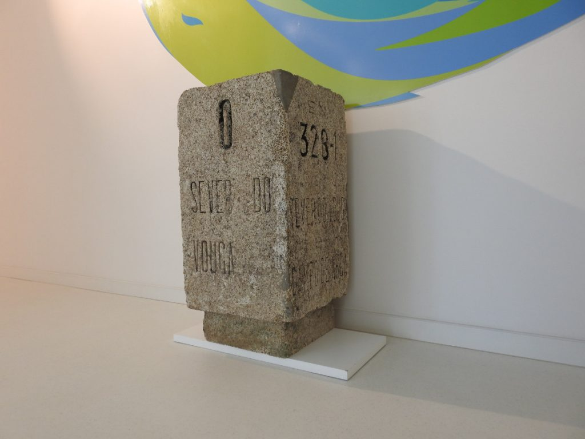
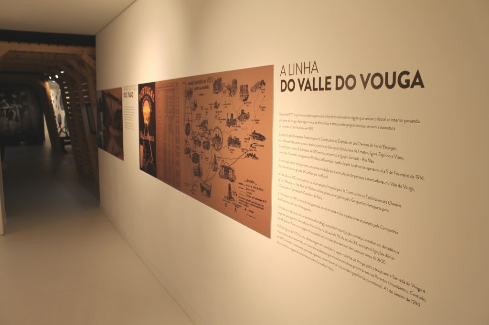
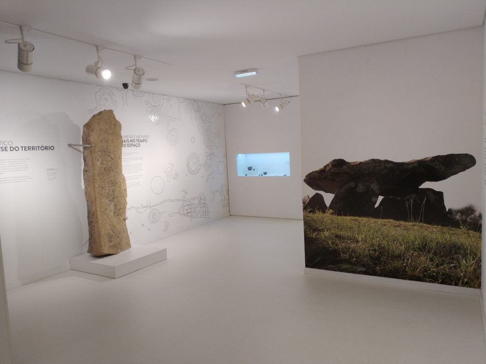
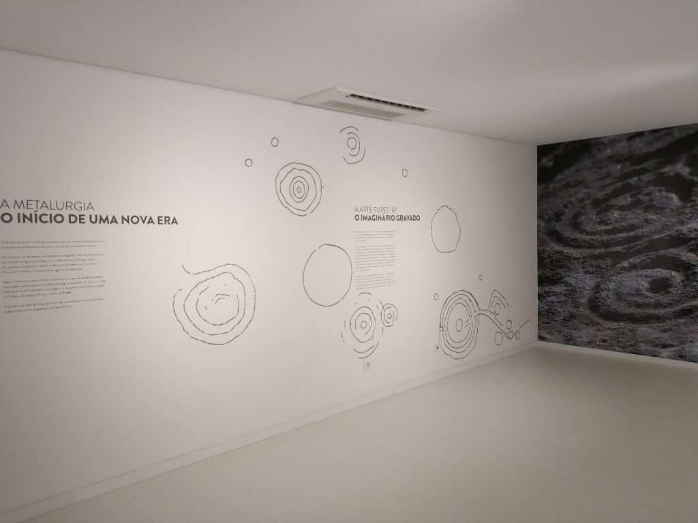
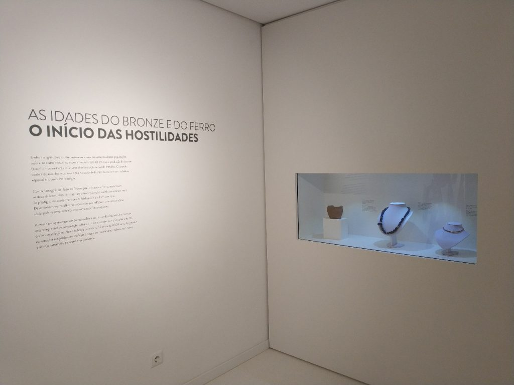
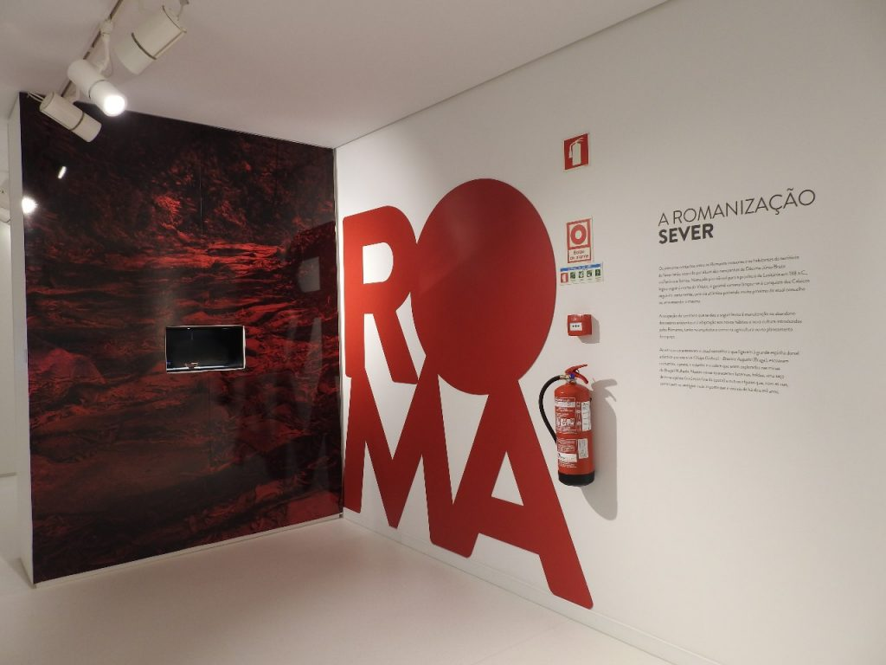
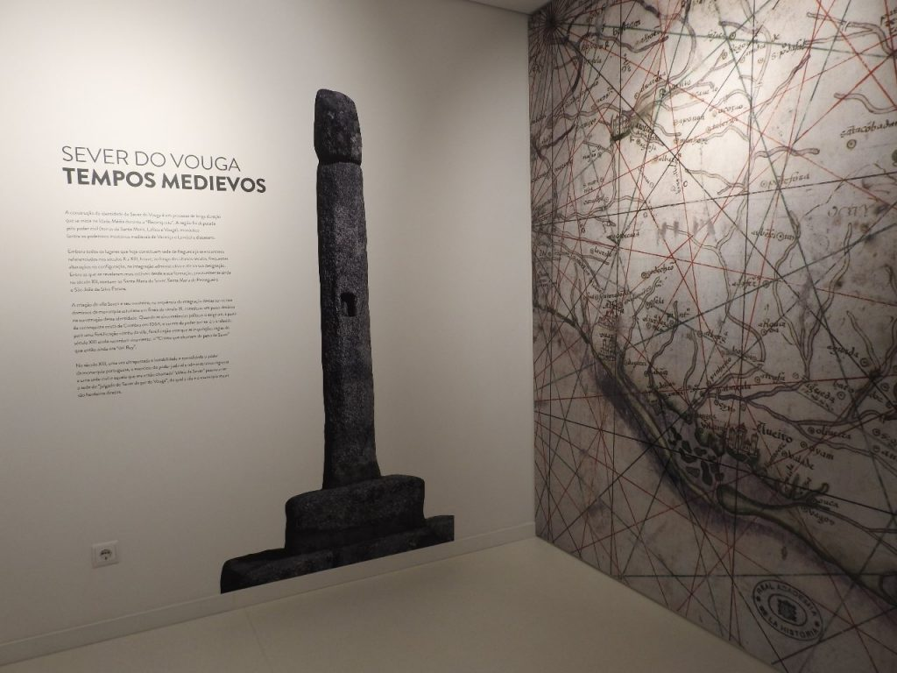

Um marco miriámetrico de KN 238.1 dá início à nossa viagem!

02 - Território

“…o terreno inclui abundância em água, que desce dos cumes, corre cavando nas veigas, dá vida e frescor aos sulcos de áridos do relevo. De entre frondes e ramadas, as espécies mostram as graças pródigas das árvores frutíferas: abetos, amieiros e carvalhos enfeitam mais e estrelam as alturas, subindo aos montes carregados, o ar doirado, luminoso e límpido das paisagens.”
03 - As Primeiras Comunidades
Os mais antigos vestígios da presença humana no vale do rio Vouga remontam ao chamado Paleolítico Inferior, isto é, a um período que deverá rondar os 250 / 300 mil anos. Estes vestígios consistem em utensílios feitos a partir de pedra lascada. Nesta época, os nossos antepassados, ainda muito diferentes do Homem atual (Homo sapiens sapiens), talhavam frequentemente seixos rolados de quartzito para fabricar ferramentas, que tinham funções muito diversificadas. Como ainda não praticavam a agricultura, é provável que estas ferramentas fossem usadas para desenterrar raízes ou tubérculos de plantas comestíveis e, sobretudo, para desmanchar animais já mortos para serem consumidos.

Num momento bastante mais recente, entre cerca de 14.000 e 10.000 anos (Paleolítico Superior), encontramos novos testemunhos da presença do Homem na região, desta vez atribuídos ao Homo sapiens sapiens. Aparentemente, as comunidades humanas desta fase terão frequentado, pelo menos, as zonas ribeirinhas. Aqui não só tinham acesso à água, como podiam pescar, caçar, recolher alimentos vegetais e obter diversas rochas e minerais para produzir utensílios. Por vezes, estas comunidades construíam cabanas e faziam lareiras nestes locais, onde tendiam a permanecer algum tempo. As cabanas e as lareiras, a par do vestuário feito a partir de peles de animais, terão sido fundamentais para a superação do intenso frio que se fazia sentir na época. A presença de vestígios do Paleolítico Superior ao longo dos vales sugere que o Homem os utilizava como “vias” de circulação, que permitiam ligar, por exemplo, os territórios do interior aos do litoral.

04 — Dólmens e Menires: Sinais no tempo e no espaço
No concelho de Sever do Vouga são conhecidos quase meia centena de monumentos funerários pré-históricos.

05 - A Metalurgia: Início de uma nova era

O domínio gradual da metalurgia acarretou impactos socioeconômicos que vieram a transformar substancialmente o modo de vida das comunidades humanas. Dos inícios da era dos metais, do Calcolítico ou Idade do Cobre (III milênio a.C.), não existem vestígios conhecidos no concelho de Sever do Vouga, mas já dos períodos subsequentes, Idades do Bronze (II/I milênio a.C.) e do Ferro (finais do I milênio a.C.) conhecemos algumas manifestações.
06 – A Arte Rupestre: o imaginário gravado
Entre o IV e o II milénio a.C., a arte fixa- -se na paisagem, ocupando o espaço vivido, no quotidiano, pelas comunidades humanas. Porém, também surge enclausurada no interior de monumentos funerários que eram visitados, apenas por alguns, em ocasiões especiais. Sever do Vouga guarda notáveis exemplares quer da arte pública – gravuras ao ar livre –, quer dessa arte privada e mais intimista – arte megalítica – datadas do período Neolítico. Nessa época, as comunidades pré-históricas desta região adotaram uma linguagem simbólica abstrata que era partilhada por outras ao longo da fachada Atlântica europeia. Embora não possamos decifrar as mensagens transmitidas pelas coreografias de círculos, covinhas, espirais, linhas quebradas ou sinuosas gravadas nas rochas, é de crer que serviriam como um meio de comunicação não só entre os diferentes grupos humanos, mas também talvez entre o universo da realidade visível e mundos imaginários.Contadas de geração em geração, e ainda conhecidas por muitos, lendas antigas relatam histórias de mouras encantadas -seres sobrenaturais que ‘viviam’ no interior dos penedos gravados. Estas lendas transportam para o presente a memória e relevância destes lugares para as comunidades que herdaram este mesmo território e que também nele gravaram sinais em pedras para delimitar o seu termo.

07 – As Idades do Bronze e do Ferro: Início das Hostilidades

Embora a agricultura continuasse a ser a base de sustento destas populações, assiste-se a uma crescente especialização artesanal em que a produção do bronze (estanho + cobre) virá a criar uma diferenciação social do trabalho. O artesão coabitava junto dos seus, mas a sua capacidade técnica tornava-o um indivíduo especial, trazendo-lhe prestígio. Com a passagem da Idade do Bronze para a Idade do Ferro, aumentam as desigualdades, denunciadas numa hierarquização social atestada nos bens de prestígio, dos quais o torques da Malhada é um bom exemplo. Desenvolvem-se muralhas nos povoados que refletem uma instabilidade sócio-política resultante dos crescentes conflitos regionais. A morte era agora encarada de modo diferente, havendo rituais muito diversos que compreendiam a inumação individual, como aconteceu na Sepultura do Rei, e a incineração, já nos finais da Idade do Bronze, há cerca de 3000 anos. As grandes construções megalíticas deram lugar a pequenos montículos nada monumentais que hoje passam despercebidos na paisagem.
08 – Romanização
Os primeiros contactos entre os Romanos invasores e os habitantes do território de Sever terão ocorrido por altura das campanhas de Décimo Júnio Bruto na Península Ibérica. Nomeado procônsul para a província da Lusitânia em 138 aC, logo a seguir à morte de Viriato, o general romano lançou–se à conquista dos Calaicos seguindo, certamente, uma via atlântica passando muito próximo do atual concelho ou atravessando-o mesmo. A ocupação do território que se deu a seguir levou à manutenção ou abandono dos castros existentes e à adaptação aos novos hábitos e nova cultura introduzidos pelos Romanos, tanto na arquitetura como na agricultura ou no planeamento do espaço. As vias que atravessavam o atual concelho e que ligavam à grande espinha dorsal atlântica que era a via Olisipo (Lisboa) – Bracara Augusta (Braga), escoavam o chumbo, a prata, o estanho e o cobre que eram explorados nas minas do Braçal, Malhada e Talhadas. Nestas minas apareceram lucernas, baldes, uma taça de sigillata (cerâmica fina da época) e outros objetos que, com as vias, constituem os vestígios mais importantes e visíveis de há dois mil anos.

09 – Tempos Medievos

A construção da identidade de Sever do Vouga é um processo de longa duração que se inicia na Idade Média durante a “Reconquista”. A região foi disputada pelo poder civil (terras de Santa Maria, Lafões e Vouga), monástico (entre os poderosos mosteiros medievais de Vacariça e Lorvão) e diocesano. Embora todos os lugares que hoje constituem sede de freguesia já se encontrem referenciados nos séculos X a XIII, houve, ao longo dos últimos séculos, frequentes alterações na configuração, na integração administrativa e até na sua designação. Entre as que se revelaram mais estáveis desde a sua formação, provavelmente ainda no século XII, contam-se Santa Maria de Sever, Santa Maria de Pessegueiro e São João de Silva Escura. A criação da villa Severi e seu mosteiro, na sequência da integração destas terras nos domínios da monarquia asturiana em finais do século IX, constituiu um passo decisivo na construção dessa identidade. Quando as circunstâncias políticas o exigiram, a partir da reconquista cristã de Coimbra em 1064, o centro de poder ter-se-á transferido para uma fortificação vizinha da villa, fortificação essa que as inquirições régias do século XIII ainda recordam vivamente: o “Crasto que chamam de pena de Sever” que então ainda era “del Rey”. No século XIII, uma vez ultrapassada a instabilidade e consolidado o poder da monarquia portuguesa, o exercício do poder judicial e administrativo regressa a uma sede civil e aquela que era então chamada “aldeia de Sever” passou a ser a sede do “julgado de Sever de par do Vouga”, do qual a vila e o município atuais são herdeiros diretos.